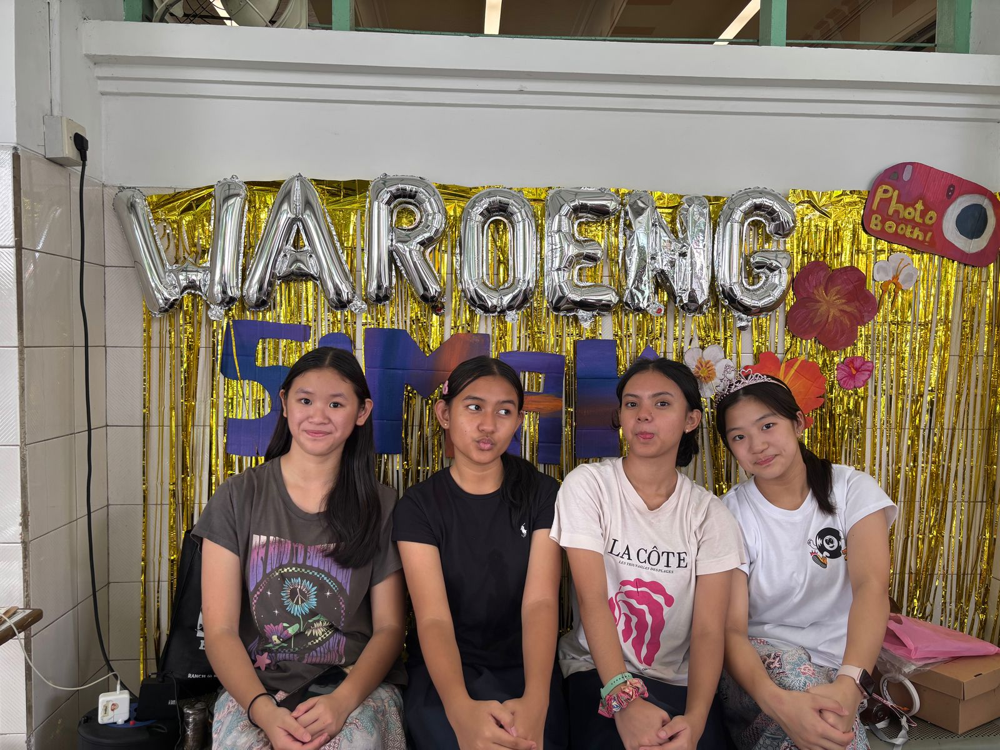
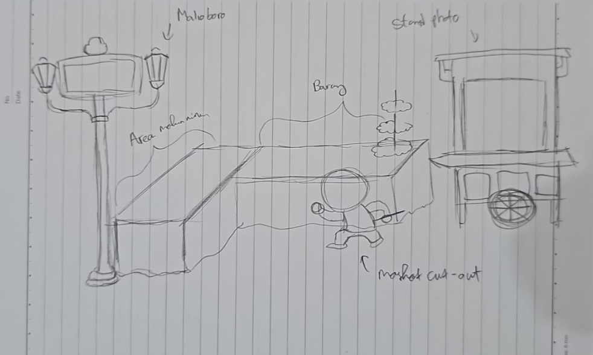

PERENCANAAN BOOTH
Dalam persiapan bazar, booth menjadi aspek penting yang harus direncanakan dengan cermat. Penampilan dan dekorasi booth perlu dibuat menarik, rapi, dan eye-catching agar dapat memikat perhatian pembeli selama bazar berlangsung. Tampilan booth ini juga merupakan bagian dari pembelajaran Integrated Learning untuk memenuhi kriteria penilaian bidang studi PPKn dan Kesenian.
Sebelum membuat booth bazar, terlebih dahulu kami membuat sketsa gambarnya. Dikarenakan tema kelompok kami adalah Yogyakarta, kami berusaha mendesain dan merakit properti sesuai warna tema tersebut. Bahan dan alat yang kami persiapkan berupa rumbai - rumbai dan huruf balon bertuliskan “Waroeng” dan tulisan “SiMak” dari karton yang sudah dipotong lalu kami warnai menggunakan cat akrilik. Kami juga telah menyiapkan cat yang kami punya untuk mendekor bersama-sama, karena kami tidak bisa mendekor meja di luar (karena hujan) jadi kami dekor di dalam kelas. Guna menambahkan aksen budaya, kelompok kami menggunakan taplak meja batik, nampan tradisional tempat meletakkan produk jualan, serta lukisan kami dari karton yang menggambarkan suasana pinggir pantai Parangtritis, Yogyakarta. Kami merancang palang Malioboro tapi tidak jadi digunakan karena luasan tempat bazar yang disediakan kurang memadai dan juga cat palang Malioboro tak kunjung kering setelah 3 hari. Pajangan warung kami yang berwarna putih dan berdimensi juga tidak digunakan karena letak meja cukup sempit. Meja yang disediakan panitia bazar ada dua, dan kami manfaatkan untuk memajang atribut perlengkapan dagangan serta mempersiapkan makanan dan minuman yang akan dijual di bazar. Meja pertama untuk meletakkan alat blender minuman pop-ice, cemilan Churros, serta rak display lip balm. Meja kedua kami gunakan untuk memajang phone strap, bracelet, stiker, tas, ID Card holder, keychain, jedai rambut, dan sebagian kecil area booth kami pergunakan sebagai latar untuk photobooth. Letak lokasi bazar kami terletak di depan Lapangan Lourdes SMP Santa Ursula Jakarta. Posisi yang kami dapatkan walaupun terbatas, namun sangat strategis. Lapangan Lourdes dapat kami manfaatkan sebagai latar photobooth bagi pembeli yang ingin latarnya berbeda saat difoto.
Tantangan yang cukup berarti ketika mendekor adalah kondisi cuaca. Dikarenakan letak booth kami dekat lapangan outdoor, banyak atribut yang rusak dan beterbangan akibat hujan angin pada saat itu. Untungnya, kami masih dapat bahu - membahu mempersiapkan ulang sesaat sebelum bazar. Kami juga membuat dan mempersiapkan rencana dekorasi booth alternatif.
 